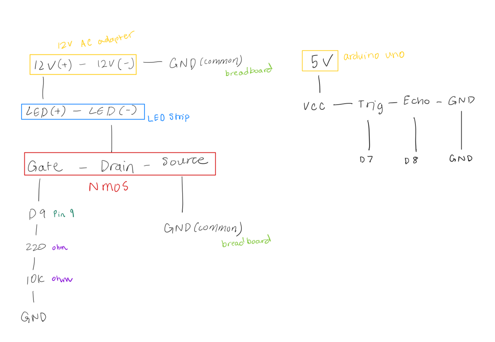

A5: Ultrasonic-Controlled LED Strip — N-MOSFET + External Power
HCDE • Arduino Uno • HC-SR04 • N-MOSFET (RFP30N06LE) • 12 V LED Strip • 220 Ω / 10 kΩ resistors • NewPing Library
Overview
This circuit uses an HC-SR04 ultrasonic distance sensor to measure hand
distance and control the brightness of a 12 V LED strip. A
logic-level N-MOSFET (RFP30N06LE) acts as a low-side switch that isolates
the high-current LED strip from the Arduino’s 5 V logic.
The NewPing library handles distance measurements, which are mapped to
PWM brightness levels using analogWrite(). Moving a hand closer increases LED
brightness, while moving away dims it. The design demonstrates control of higher-power
loads using a transistor and an external power supply.
Firmware (Arduino Code)
The firmware reads the ultrasonic sensor with NewPing.h and uses the measured
distance to set a PWM output that drives the MOSFET gate, controlling LED brightness.
// ---------------------------------------------------------
// NewPing library for the HC-SR04 sensor
#include NewPing.h
// ultrasonic pins
const int TRIG_PIN = 7; // Trigger pin
const int ECHO_PIN = 8; // Echo pin
// Define maximum measurable distance (cm)
const unsigned int MAX_DISTANCE = 200;
NewPing sonar(TRIG_PIN, ECHO_PIN, MAX_DISTANCE);
// MOSFET gate pin (PWM output to LED strip)
const int MOSFET_GATE_PIN = 5;
// Define distance range for brightness mapping (cm)
const int NEAR_CM = 5; // Hand close → full brightness
const int FAR_CM = 100; // Hand far → dim/off
void setup() {
// Set MOSFET pin as output
pinMode(MOSFET_GATE_PIN, OUTPUT);
// Start with LEDs off
analogWrite(MOSFET_GATE_PIN, 0);
}
void loop() {
// Measure distance in cm from the ultrasonic sensor
unsigned int dist = sonar.ping_cm();
// If no reading (0), assume object is far away
if (dist == 0) dist = FAR_CM + 20;
// Constrain readings within the usable range
dist = constrain(dist, NEAR_CM, FAR_CM);
// Map distance to LED brightness (close = bright)
int pwm = map(dist, NEAR_CM, FAR_CM, 255, 0);
// Output PWM signal to MOSFET gate
analogWrite(MOSFET_GATE_PIN, pwm);
// Short delay for stable readings
delay(100);
}
Schematic and Connections

The HC-SR04 connects to pins D7 (TRIG) and D8 (ECHO).
The LED strip runs from an external 12 V supply. Its positive terminal connects directly to +12 V,
and its negative terminal connects to the MOSFET’s Drain pin.
The MOSFET Source connects to GND, shared with the Arduino and the 12 V supply.
The Gate connects to D9 through a 220 Ω resistor, with a 10 kΩ pull-down to ground to keep
the LED off at startup.
Calculations and Expected Currents
For a 5 m, 16 W LED strip powered at 12 V:
I = P / V = 16 W / 12 V = 1.33 A
P_MOSFET = I² × R_DS(on) = 1.33² × 0.047 Ω ≈ 0.083 W
The RFP30N06LE is rated for up to 30 A continuous, far higher than the 1.33 A
required by the LED strip. The conduction loss is only about 0.08 W, meaning the transistor
stays cool.
The 220 Ω resistor limits gate current spikes to around 23 mA
(5 V ÷ 220 Ω), while the 10 kΩ resistor keeps the gate LOW at reset,
drawing only 0.5 mA when the pin is HIGH.
The gate voltage swings between 0 V and 5 V, producing a full VGS of 5 V for
reliable switching. A 12 V / 2 A power supply provides safe overhead.
Voltage vs. Time (PWM Brightness Control)
The Arduino outputs a PWM signal (0–255 duty) on pin D5. As the duty cycle increases,
the MOSFET conducts longer per cycle, increasing average current through the LED strip
and raising brightness. Duty cycle is mapped directly to the ultrasonic distance.
AI Tools Usage & Reflection
I used ChatGPT to simplify the circuit and write annotated code using NewPing.h
instead of manual pulse timing. It helped calculate current and power for the MOSFET and LED
strip, ensure the transistor’s ratings were sufficient, and organize this documentation in
the same format as prior assignments.